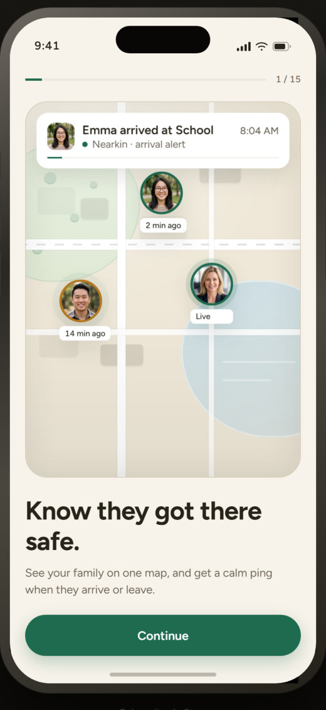
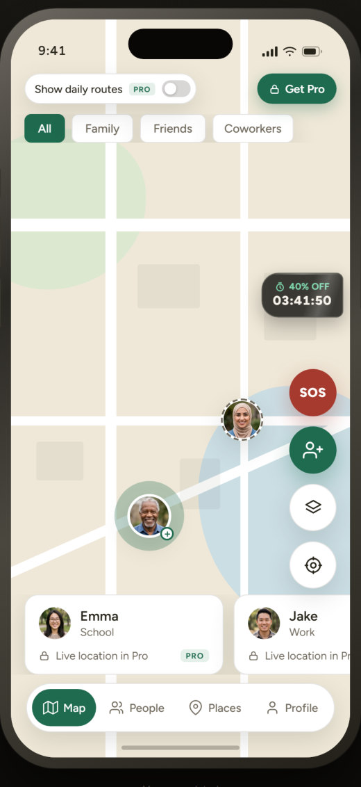
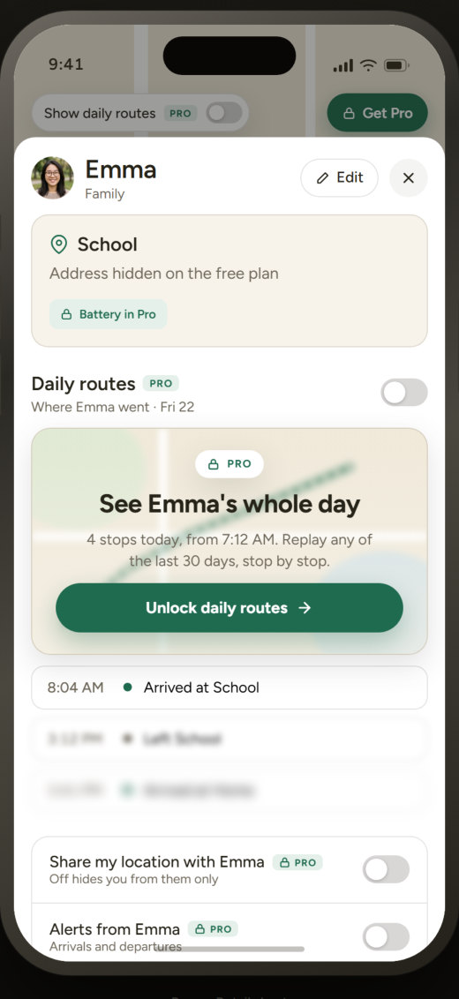
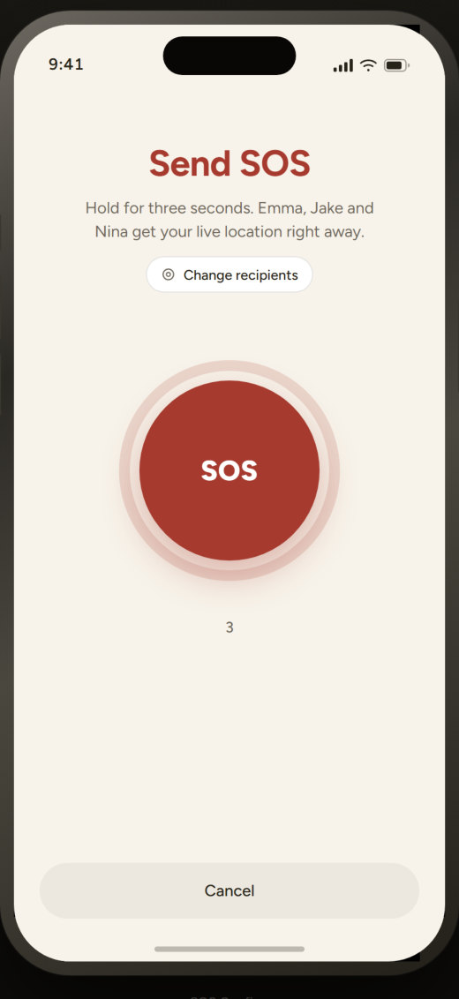
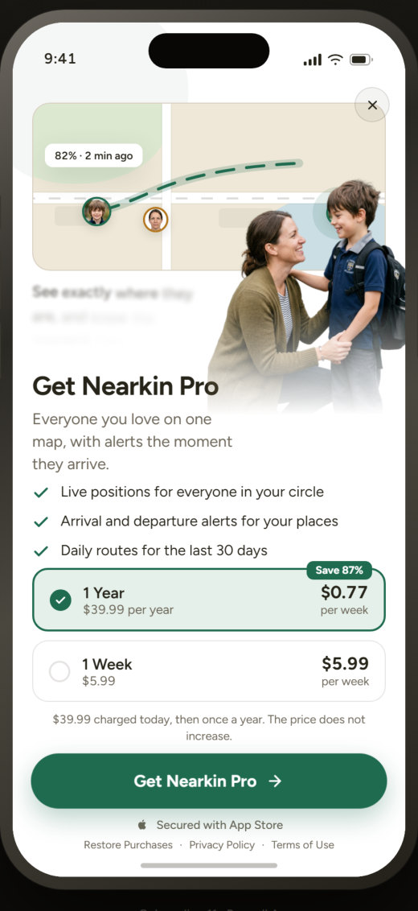

Nearkin
Aile Konum Paylaşımı · iOSAilenin ve yakınlarının konumunu paylaşan, “eve vardı mı?” endişesini bitiren bir uygulama. Sıcak krem zemin, yeşil vurgular ve harita odaklı bir ana ekran; SOS gibi kritik anlar için kırmızı yalnızca o ana ayrıldı.
- Yıl
- 2026
- Kapsam
- Onboarding, harita, SOS, paywall
- Renk




